6.10 Allgemeines Parsing./course1/wly/06/10-general-parsing.wly:2:11
6.10 Allgemeines Parsing./course1/wly/06/10-general-parsing.wly:2:11
Wir haben drei Methoden kennengelernt, kontextfreie./course1/wly/06/10-general-parsing.wly:4:5 Sprachen zu parsen: rekursiver Abstieg (mit Demoseite./course1/wly/06/10-general-parsing.wly:5:5 ./course1/wly/06/10-general-parsing.wly:6:5drawManualGrammar.html./course1/wly/06/10-general-parsing.wly:6:6),./course1/wly/06/10-general-parsing.wly:6:121 die LL-Parser (die die Mengen ./course1/wly/06/10-general-parsing.wly:7:5$\First_k(X)$./course1/wly/06/10-general-parsing.wly:7:35 berechnen, wie./course1/wly/06/10-general-parsing.wly:7:48 auf./course1/wly/06/10-general-parsing.wly:8:5 ./course1/wly/06/10-general-parsing.wly:9:5drawFirstComputation.html./course1/wly/06/10-general-parsing.wly:9:6 ./course1/wly/06/10-general-parsing.wly:9:127 demonstriert), und die LR-Parser (die die Teilbäume auf den./course1/wly/06/10-general-parsing.wly:10:5 Stack legen und nach Blüten suchen, hier die Demoseite./course1/wly/06/10-general-parsing.wly:11:5 ./course1/wly/06/10-general-parsing.wly:12:5drawLR0ParserPrefixArithmetic./course1/wly/06/10-general-parsing.wly:12:6 ./course1/wly/06/10-general-parsing.wly:12:140 für arithmetische Ausdrücke). Rekursiver Abstieg kann, wenn./course1/wly/06/10-general-parsing.wly:13:5 man nicht vorsichtig ist, in Endlosschleifen landen und./course1/wly/06/10-general-parsing.wly:14:5 kann im Allgemeinen selbst bei einfachen Grammatiken./course1/wly/06/10-general-parsing.wly:15:5 exponentielle Laufzeit aufweisen. LL-Parser und LR-Parser./course1/wly/06/10-general-parsing.wly:16:5 funktionieren schlicht nicht für allgemeine kontextfreie./course1/wly/06/10-general-parsing.wly:17:5 Grammatiken. Standardbeispiel ist die Palindromsprache ohne./course1/wly/06/10-general-parsing.wly:18:5 Kennzeichnung der Mitte:./course1/wly/06/10-general-parsing.wly:19:5
Weder LL-Parser noch LR-Parser können bei langen Wörtern./course1/wly/06/10-general-parsing.wly:27:5 wie ./course1/wly/06/10-general-parsing.wly:28:5$aaaaaaaaaaaaaabbaaaaaaaaaaaaaa$./course1/wly/06/10-general-parsing.wly:28:9 erkennen, wo die./course1/wly/06/10-general-parsing.wly:28:41 Mitte ist. Das muss man aber wissen, denn sonst landet man./course1/wly/06/10-general-parsing.wly:29:5 in einer Sackgasse. Es gilt sogar: jeder Kellerautomat für./course1/wly/06/10-general-parsing.wly:30:5 diese Sprache muss nichtdeterministisch sein (was wir an./course1/wly/06/10-general-parsing.wly:31:5 dieser Stelle weder formal definieren noch beweisen). Noch./course1/wly/06/10-general-parsing.wly:32:5 schlimmer steht es mit Grammatiken wie./course1/wly/06/10-general-parsing.wly:33:5
Diese erzeugt die Sprache./course1/wly/06/10-general-parsing.wly:43:5
Die Grammatik ist ./course1/wly/06/10-general-parsing.wly:49:5mehrdeutig./course1/wly/06/10-general-parsing.wly:49:24,./course1/wly/06/10-general-parsing.wly:49:35 insbesondere kann jedes./course1/wly/06/10-general-parsing.wly:49:35 Wort der Form ./course1/wly/06/10-general-parsing.wly:50:5$a^i b^i c^i$./course1/wly/06/10-general-parsing.wly:50:19 auf zwei Weisen abgeleitet./course1/wly/06/10-general-parsing.wly:50:32 werden: via ./course1/wly/06/10-general-parsing.wly:51:5$AY$./course1/wly/06/10-general-parsing.wly:51:17 und via ./course1/wly/06/10-general-parsing.wly:51:21$XC$./course1/wly/06/10-general-parsing.wly:51:30../course1/wly/06/10-general-parsing.wly:51:34 Man kann sogar zeigen, dass./course1/wly/06/10-general-parsing.wly:51:34 ./course1/wly/06/10-general-parsing.wly:52:5jede./course1/wly/06/10-general-parsing.wly:52:6 äquivalente Grammatik ./course1/wly/06/10-general-parsing.wly:52:11$G'$./course1/wly/06/10-general-parsing.wly:52:34,./course1/wly/06/10-general-parsing.wly:52:38 die also die gleiche./course1/wly/06/10-general-parsing.wly:52:38 Sprache ./course1/wly/06/10-general-parsing.wly:53:5$L$./course1/wly/06/10-general-parsing.wly:53:13 erzeugt, mehrdeutig sein muss; man sagt, die./course1/wly/06/10-general-parsing.wly:53:16 Sprache ./course1/wly/06/10-general-parsing.wly:54:5$L$./course1/wly/06/10-general-parsing.wly:54:13 ist ./course1/wly/06/10-general-parsing.wly:54:16inhärent mehrdeutig./course1/wly/06/10-general-parsing.wly:54:22../course1/wly/06/10-general-parsing.wly:54:42 Für./course1/wly/06/10-general-parsing.wly:54:42 nichtdeterministische oder gar mehrdeutige Grammatiken /./course1/wly/06/10-general-parsing.wly:55:5 Sprachen sind LL- und LR-Parser unbrauchbar. Gibt es eine./course1/wly/06/10-general-parsing.wly:56:5 allgemeine Methode, die für alle Grammatiken funktioniert?./course1/wly/06/10-general-parsing.wly:57:5 Ja, den sogenannten CYK-Algorithmus. Nur leider ist die./course1/wly/06/10-general-parsing.wly:58:5 nicht besonders schnell. Sie hat kubische Laufzeit./course1/wly/06/10-general-parsing.wly:59:5 ./course1/wly/06/10-general-parsing.wly:60:5$O(n^3)$./course1/wly/06/10-general-parsing.wly:60:5,./course1/wly/06/10-general-parsing.wly:60:13 was zwar in der theoretischen Informatik als./course1/wly/06/10-general-parsing.wly:60:13 ./course1/wly/06/10-general-parsing.wly:61:5effizient./course1/wly/06/10-general-parsing.wly:61:6 durchgeht, in der Praxis leider meist./course1/wly/06/10-general-parsing.wly:61:16 unbrauchbar ist../course1/wly/06/10-general-parsing.wly:62:5
Eine kontextfreie Grammatik ist in ./course1/wly/06/10-general-parsing.wly:67:5Chomsky-Normalform./course1/wly/06/10-general-parsing.wly:67:41,./course1/wly/06/10-general-parsing.wly:67:60 ./course1/wly/06/10-general-parsing.wly:67:60 wenn jede Produktion eine der folgenden Formen hat:./course1/wly/06/10-general-parsing.wly:68:5
Eine solche Sprache kann offensichtlich nicht das Wort./course1/wly/06/10-general-parsing.wly:75:5 ./course1/wly/06/10-general-parsing.wly:76:5$\epsilon$./course1/wly/06/10-general-parsing.wly:76:5 ableiten. Daher lassen wir als Sonderregel die./course1/wly/06/10-general-parsing.wly:76:15 Produktion./course1/wly/06/10-general-parsing.wly:77:5
zu, verbieten dann aber, dass das Startsymbol ./course1/wly/06/10-general-parsing.wly:83:5$S$./course1/wly/06/10-general-parsing.wly:83:51 auf der./course1/wly/06/10-general-parsing.wly:83:54 rechten Seite einer Produktion vorkommen kann../course1/wly/06/10-general-parsing.wly:84:5
Theorem 6.10.1./course1/wly/06/10-general-parsing.wly:86:5 ./course1/wly/06/10-general-parsing.wly:86:5 Zu jeder kontextfreien Grammatik gibt es eine äquivalente./course1/wly/06/10-general-parsing.wly:87:9 Grammatik in Chomsky-Normalform../course1/wly/06/10-general-parsing.wly:88:9
Anstatt hier einen formalen Beweis anzugeben (den Sie./course1/wly/06/10-general-parsing.wly:90:5 sich, wenn Sie wollen, im Lehrbuch oder auf Wikipedia./course1/wly/06/10-general-parsing.wly:91:5 anschauen können), lasse ich Sie lieber anhand einer./course1/wly/06/10-general-parsing.wly:92:5 Übungsaufgabe die Konstruktion von selbst verstehen:./course1/wly/06/10-general-parsing.wly:93:5
Übungsaufgabe 6.10.1./course1/wly/06/10-general-parsing.wly:95:5 ./course1/wly/06/10-general-parsing.wly:95:5 Finden Sie zu der folgenden kontextfreien Grammatik./course1/wly/06/10-general-parsing.wly:96:9
eine äquivalente in Chomsky-Normalform. Fragen, die Sie./course1/wly/06/10-general-parsing.wly:105:9 sich dabei stellen sollten:./course1/wly/06/10-general-parsing.wly:106:9
Für welche Nichtterminale gibt es ./course1/wly/06/10-general-parsing.wly:110:17$U \Step{}^* V$./course1/wly/06/10-general-parsing.wly:110:51?./course1/wly/06/10-general-parsing.wly:110:66 ./course1/wly/06/10-general-parsing.wly:110:66 Zeichnen Sie ein Bildchen mit all diesen ./course1/wly/06/10-general-parsing.wly:111:17$\Step{}^*$./course1/wly/06/10-general-parsing.wly:111:58 ./course1/wly/06/10-general-parsing.wly:111:69 -Pfeilen../course1/wly/06/10-general-parsing.wly:112:17
Von welchen Nichtterminalen können Sie überhaupt Wörter./course1/wly/06/10-general-parsing.wly:115:17 ableiten, also ./course1/wly/06/10-general-parsing.wly:116:17$U \Step{}^* w \in \Sigma^*$./course1/wly/06/10-general-parsing.wly:116:32?./course1/wly/06/10-general-parsing.wly:116:60 Wie finden./course1/wly/06/10-general-parsing.wly:116:60 Sie das im Allgemeinen heraus?./course1/wly/06/10-general-parsing.wly:117:17
Welche Nichtterminale können ./course1/wly/06/10-general-parsing.wly:120:17$\epsilon$./course1/wly/06/10-general-parsing.wly:120:46 ableiten, also./course1/wly/06/10-general-parsing.wly:120:56 ./course1/wly/06/10-general-parsing.wly:121:17$U \Step{}^* \epsilon$./course1/wly/06/10-general-parsing.wly:121:17?./course1/wly/06/10-general-parsing.wly:121:39 Wie finden Sie das im Allgemeinen./course1/wly/06/10-general-parsing.wly:121:39 heraus?./course1/wly/06/10-general-parsing.wly:122:17
Wenn nun ./course1/wly/06/10-general-parsing.wly:124:5$G$./course1/wly/06/10-general-parsing.wly:124:14 in Chomsky-Normalform vorliegt und wir für./course1/wly/06/10-general-parsing.wly:124:17 ein gegebenes Eingabewort ./course1/wly/06/10-general-parsing.wly:125:5$w$./course1/wly/06/10-general-parsing.wly:125:31 eine Ableitung./course1/wly/06/10-general-parsing.wly:125:34 ./course1/wly/06/10-general-parsing.wly:126:5$G: S \Step{}^* w$./course1/wly/06/10-general-parsing.wly:126:5 finden wollen (oder feststellen, dass./course1/wly/06/10-general-parsing.wly:126:23 es keine gibt), so ist die erste Beobachtung, dass eine./course1/wly/06/10-general-parsing.wly:127:5 Linksableitung die Form./course1/wly/06/10-general-parsing.wly:128:5
haben muss, für ./course1/wly/06/10-general-parsing.wly:134:5$w = uv$./course1/wly/06/10-general-parsing.wly:134:21../course1/wly/06/10-general-parsing.wly:134:29 Wenn wir die Unterteilung von ./course1/wly/06/10-general-parsing.wly:134:29$w$./course1/wly/06/10-general-parsing.wly:134:61 ./course1/wly/06/10-general-parsing.wly:134:64 in ./course1/wly/06/10-general-parsing.wly:135:5$u$./course1/wly/06/10-general-parsing.wly:135:8 und ./course1/wly/06/10-general-parsing.wly:135:11$v$./course1/wly/06/10-general-parsing.wly:135:16 kennen würden, so könnten wir rekursiv./course1/wly/06/10-general-parsing.wly:135:19 fragen, wie man denn ./course1/wly/06/10-general-parsing.wly:136:5$A \Step{}^* u$./course1/wly/06/10-general-parsing.wly:136:26 und ./course1/wly/06/10-general-parsing.wly:136:41$B \Step{}^* v$./course1/wly/06/10-general-parsing.wly:136:46 ./course1/wly/06/10-general-parsing.wly:136:61 ableitet. Da wir sie aber ./course1/wly/06/10-general-parsing.wly:137:5nicht./course1/wly/06/10-general-parsing.wly:137:32 kennen, also konkret./course1/wly/06/10-general-parsing.wly:137:38 nicht wissen, wie lange ./course1/wly/06/10-general-parsing.wly:138:5$u$./course1/wly/06/10-general-parsing.wly:138:29 und ./course1/wly/06/10-general-parsing.wly:138:32$v$./course1/wly/06/10-general-parsing.wly:138:37 sind, können wir alle./course1/wly/06/10-general-parsing.wly:138:40 Möglichkeiten durchprobieren. Da ./course1/wly/06/10-general-parsing.wly:139:5$G$./course1/wly/06/10-general-parsing.wly:139:38 in Chomsky-Normalform./course1/wly/06/10-general-parsing.wly:139:41 vorliegt, wissen wir, dass ./course1/wly/06/10-general-parsing.wly:140:5$|u| \geq 1$./course1/wly/06/10-general-parsing.wly:140:32 und ./course1/wly/06/10-general-parsing.wly:140:44$|v| \geq 1$./course1/wly/06/10-general-parsing.wly:140:49,./course1/wly/06/10-general-parsing.wly:140:61 ./course1/wly/06/10-general-parsing.wly:140:61 also ./course1/wly/06/10-general-parsing.wly:141:5$1 \leq |u| \leq |w|-1$./course1/wly/06/10-general-parsing.wly:141:10../course1/wly/06/10-general-parsing.wly:141:33 Wir probieren also alle ./course1/wly/06/10-general-parsing.wly:141:33$n-1$./course1/wly/06/10-general-parsing.wly:141:59 ./course1/wly/06/10-general-parsing.wly:141:64 möglichen Zerlegungen von ./course1/wly/06/10-general-parsing.wly:142:5$w$./course1/wly/06/10-general-parsing.wly:142:31 durch. Wenn wir das rekursiv./course1/wly/06/10-general-parsing.wly:142:34 täten, dann würden das eine enorme Laufzeit verursachen../course1/wly/06/10-general-parsing.wly:143:5 Der Trick besteht darin, Zwischenergebnisse systematisch zu./course1/wly/06/10-general-parsing.wly:144:5 berechnen, um somit Laufzeit zu sparen../course1/wly/06/10-general-parsing.wly:145:5
Die oben skizzierte Idee ist im CYK-Algorithmus./course1/wly/06/10-general-parsing.wly:150:5 konkretisiert (benannt nach John Cocke, Daniel Younger und./course1/wly/06/10-general-parsing.wly:151:5 Tadao Kasami). Für die praktische Anwendung ist dieser./course1/wly/06/10-general-parsing.wly:152:5 weniger relevant. Dafür ist er ein wunderbares Beispiel für./course1/wly/06/10-general-parsing.wly:153:5 einen Algorithmus, der auf dem Prinzip des ./course1/wly/06/10-general-parsing.wly:154:5Dynamic./course1/wly/06/10-general-parsing.wly:154:49 Programing./course1/wly/06/10-general-parsing.wly:155:5 fußt, welches Sie in der Vorlesung ./course1/wly/06/10-general-parsing.wly:155:16Algorithmen./course1/wly/06/10-general-parsing.wly:155:53 und./course1/wly/06/10-general-parsing.wly:156:5 Komplexität./course1/wly/06/10-general-parsing.wly:157:5 ./course1/wly/06/10-general-parsing.wly:157:95 im dritten Semester ausführlicher kennenlernen wollen. Wir./course1/wly/06/10-general-parsing.wly:158:5 beschränken uns bei dem folgenden Algorithmus zunächst./course1/wly/06/10-general-parsing.wly:159:5 darauf, die Frage zu beantworten, ob den überhaupt./course1/wly/06/10-general-parsing.wly:160:5 ./course1/wly/06/10-general-parsing.wly:161:5$S \Step{}^* w$./course1/wly/06/10-general-parsing.wly:161:5 gilt, und interessieren uns erst einmal./course1/wly/06/10-general-parsing.wly:161:20 nicht dafür eine solche Ableitung auch zu finden (in der./course1/wly/06/10-general-parsing.wly:162:5 Algorithmik versteht man das als ./course1/wly/06/10-general-parsing.wly:163:5Entscheidungsproblem./course1/wly/06/10-general-parsing.wly:163:39,./course1/wly/06/10-general-parsing.wly:163:60 im./course1/wly/06/10-general-parsing.wly:163:60 Gegensatz zu dem allgemeinerin ./course1/wly/06/10-general-parsing.wly:164:5Suchproblem./course1/wly/06/10-general-parsing.wly:164:37)../course1/wly/06/10-general-parsing.wly:164:49 Der Entwurf./course1/wly/06/10-general-parsing.wly:164:49 eines Dynamic-Programming-Algorithmus beginnt oft mit der./course1/wly/06/10-general-parsing.wly:165:5 folgenden Frage: ./course1/wly/06/10-general-parsing.wly:166:5Was sind sinnvolle Zwischenergebnisse?./course1/wly/06/10-general-parsing.wly:166:23 ./course1/wly/06/10-general-parsing.wly:166:62 In unserem Falle sind Ableitungen der Form./course1/wly/06/10-general-parsing.wly:167:5
sinnvolle Zwischenergebnisse, wenn ./course1/wly/06/10-general-parsing.wly:173:5$u$./course1/wly/06/10-general-parsing.wly:173:40 ein Teilwort von ./course1/wly/06/10-general-parsing.wly:173:43$w$./course1/wly/06/10-general-parsing.wly:173:61 ./course1/wly/06/10-general-parsing.wly:173:64 ist, also ./course1/wly/06/10-general-parsing.wly:174:5$w = v_1 u v_2$./course1/wly/06/10-general-parsing.wly:174:15../course1/wly/06/10-general-parsing.wly:174:30 Konkret schreiben wir./course1/wly/06/10-general-parsing.wly:174:30 ./course1/wly/06/10-general-parsing.wly:175:5$w = w_0 w_1 \dots w_{n-1}$./course1/wly/06/10-general-parsing.wly:175:5 und definieren./course1/wly/06/10-general-parsing.wly:175:32
und./course1/wly/06/10-general-parsing.wly:181:5
Das ist also die Menge der Nichtterminale, die das./course1/wly/06/10-general-parsing.wly:187:5 Teilwort ./course1/wly/06/10-general-parsing.wly:188:5$w[i:j]$./course1/wly/06/10-general-parsing.wly:188:14 ableiten können. Die "Hauptfrage" ist./course1/wly/06/10-general-parsing.wly:188:22 dann: enthält ./course1/wly/06/10-general-parsing.wly:189:5$N_{0,|w|}$./course1/wly/06/10-general-parsing.wly:189:19 das Startsymbol ./course1/wly/06/10-general-parsing.wly:189:30$S$./course1/wly/06/10-general-parsing.wly:189:47?./course1/wly/06/10-general-parsing.wly:189:50 Der./course1/wly/06/10-general-parsing.wly:189:50 CYK-Algorithmus berechnet nun die Mengen ./course1/wly/06/10-general-parsing.wly:190:5$N_{i, i+d}$./course1/wly/06/10-general-parsing.wly:190:46 ./course1/wly/06/10-general-parsing.wly:190:58 systematisch für ./course1/wly/06/10-general-parsing.wly:191:5$d = 1, \dots, n$./course1/wly/06/10-general-parsing.wly:191:22,./course1/wly/06/10-general-parsing.wly:191:39 versucht also, alle./course1/wly/06/10-general-parsing.wly:191:39 Unterwörter der Länge ./course1/wly/06/10-general-parsing.wly:192:5$d$./course1/wly/06/10-general-parsing.wly:192:27 abzuleiten, beginnend mit./course1/wly/06/10-general-parsing.wly:192:30 ./course1/wly/06/10-general-parsing.wly:193:5$d = 1$./course1/wly/06/10-general-parsing.wly:193:5,./course1/wly/06/10-general-parsing.wly:193:12 also ./course1/wly/06/10-general-parsing.wly:193:12$N_{i,i+1}$./course1/wly/06/10-general-parsing.wly:193:19../course1/wly/06/10-general-parsing.wly:193:30 Diese Mengen sind leicht zu./course1/wly/06/10-general-parsing.wly:193:30 bestimmen:./course1/wly/06/10-general-parsing.wly:194:5
Das gilt nur, weil ./course1/wly/06/10-general-parsing.wly:201:5$G$./course1/wly/06/10-general-parsing.wly:201:24 in Chomsky-Normalform vorliegt und./course1/wly/06/10-general-parsing.wly:201:27 somit Ableitungen mit mehr als einem Schritt./course1/wly/06/10-general-parsing.wly:202:5 notwendigerweise Wörter mit mehr als einem Zeichen./course1/wly/06/10-general-parsing.wly:203:5 produzieren würden. Nun müssen wir uns Gedanken machen, wie./course1/wly/06/10-general-parsing.wly:204:5 wir ./course1/wly/06/10-general-parsing.wly:205:5$N_{i,k}$./course1/wly/06/10-general-parsing.wly:205:9 berechnen, also das Unterwort ./course1/wly/06/10-general-parsing.wly:205:18$w[i:k]$./course1/wly/06/10-general-parsing.wly:205:49,./course1/wly/06/10-general-parsing.wly:205:57 das./course1/wly/06/10-general-parsing.wly:205:57 Länge ./course1/wly/06/10-general-parsing.wly:206:5$k-i$./course1/wly/06/10-general-parsing.wly:206:11 hat, ableiten, wenn wir bereits wissen, wie./course1/wly/06/10-general-parsing.wly:206:16 wir kürzere Unterwörter herleiten. Die Kernbeobachtung ist:./course1/wly/06/10-general-parsing.wly:207:5 ./course1/wly/06/10-general-parsing.wly:208:5$X \in N_{i,k}$./course1/wly/06/10-general-parsing.wly:208:5,./course1/wly/06/10-general-parsing.wly:208:20 also ./course1/wly/06/10-general-parsing.wly:208:20$X \Step{}^* w[i:k]$./course1/wly/06/10-general-parsing.wly:208:27 gilt genau./course1/wly/06/10-general-parsing.wly:208:47 dann, wenn es eine Produktion ./course1/wly/06/10-general-parsing.wly:209:5$X \rightarrow YZ$./course1/wly/06/10-general-parsing.wly:209:35 gibt, so./course1/wly/06/10-general-parsing.wly:209:53 dass dann./course1/wly/06/10-general-parsing.wly:210:5
gilt. Das Problem ist, wie bereits oben skizziert, dass./course1/wly/06/10-general-parsing.wly:217:5 wir die "Grenze" ./course1/wly/06/10-general-parsing.wly:218:5$j$./course1/wly/06/10-general-parsing.wly:218:22 nicht kennen. Wir probieren also alle./course1/wly/06/10-general-parsing.wly:218:25 Grenzen aus, und somit./course1/wly/06/10-general-parsing.wly:219:5
Dies können wir mit einer Schleife über ./course1/wly/06/10-general-parsing.wly:227:5$j = i+1 \dots k-1$./course1/wly/06/10-general-parsing.wly:227:45 ./course1/wly/06/10-general-parsing.wly:227:64 und einer Schleife über alle Produktionen./course1/wly/06/10-general-parsing.wly:228:5 ./course1/wly/06/10-general-parsing.wly:229:5$X \rightarrow YZ$./course1/wly/06/10-general-parsing.wly:229:5 berechnen, da wir die Mengen ./course1/wly/06/10-general-parsing.wly:229:23$N_{i,j}$./course1/wly/06/10-general-parsing.wly:229:53 ./course1/wly/06/10-general-parsing.wly:229:62 und ./course1/wly/06/10-general-parsing.wly:230:5$N_{j-k}$./course1/wly/06/10-general-parsing.wly:230:9 ja bereits kennen, da ./course1/wly/06/10-general-parsing.wly:230:18$k-j, j-i \lt k-i$./course1/wly/06/10-general-parsing.wly:230:41,./course1/wly/06/10-general-parsing.wly:230:59 ./course1/wly/06/10-general-parsing.wly:230:59 diese Bereiche also kleinere Unterwörter darstellen../course1/wly/06/10-general-parsing.wly:231:5
Initialisiere für alle ./course1/wly/06/10-general-parsing.wly:235:13$0 \leq i \lt n$./course1/wly/06/10-general-parsing.wly:235:36 die Mengen./course1/wly/06/10-general-parsing.wly:235:52 ./course1/wly/06/10-general-parsing.wly:236:13\(N_{i,i+1} := \{X \in N \ | \ X \step{} w_i \textnormal{ ist eine Produktion in $G$}\}\)./course1/wly/06/10-general-parsing.wly:236:13
for l = 2 .. n./course1/wly/06/10-general-parsing.wly:240:14
for i = 0 .. n-l./course1/wly/06/10-general-parsing.wly:245:22
k := i+l./course1/wly/06/10-general-parsing.wly:250:30
./course1/wly/06/10-general-parsing.wly:250:39# wir betrachten das Interval w[i:k] der Länge l./course1/wly/06/10-general-parsing.wly:253:33
Berechne ./course1/wly/06/10-general-parsing.wly:256:29$N_{i,k}$./course1/wly/06/10-general-parsing.wly:256:38 wie in (./course1/wly/06/10-general-parsing.wly:256:4710./course1/wly/06/10-general-parsing.wly:256:47). Konkret./course1/wly/06/10-general-parsing.wly:256:47 heißt das:./course1/wly/06/10-general-parsing.wly:257:29
Initialisiere ./course1/wly/06/10-general-parsing.wly:260:29$N_{i,k} := \emptyset$./course1/wly/06/10-general-parsing.wly:260:43
for j = i+1 .. k-1:./course1/wly/06/10-general-parsing.wly:263:30
for all productions./course1/wly/06/10-general-parsing.wly:268:38
./course1/wly/06/10-general-parsing.wly:268:58$X \rightarrow YZ$./course1/wly/06/10-general-parsing.wly:268:59:./course1/wly/06/10-general-parsing.wly:268:77
füge ./course1/wly/06/10-general-parsing.wly:273:45$X$./course1/wly/06/10-general-parsing.wly:273:50 zu ./course1/wly/06/10-general-parsing.wly:273:53$N_{i,k}$./course1/wly/06/10-general-parsing.wly:273:57 hinzu, falls ./course1/wly/06/10-general-parsing.wly:273:66$Y \in N_{i,j}$./course1/wly/06/10-general-parsing.wly:273:80 und./course1/wly/06/10-general-parsing.wly:273:95 ./course1/wly/06/10-general-parsing.wly:274:45$Z \in N_{j,k}$./course1/wly/06/10-general-parsing.wly:274:45 gilt../course1/wly/06/10-general-parsing.wly:274:60
end for all productions./course1/wly/06/10-general-parsing.wly:277:38
end for j./course1/wly/06/10-general-parsing.wly:280:30
end for k./course1/wly/06/10-general-parsing.wly:283:22
end for i./course1/wly/06/10-general-parsing.wly:286:14
return True if./course1/wly/06/10-general-parsing.wly:289:14
./course1/wly/06/10-general-parsing.wly:289:29$S \in N_{0,n}$./course1/wly/06/10-general-parsing.wly:289:30
./course1/wly/06/10-general-parsing.wly:289:45else return False./course1/wly/06/10-general-parsing.wly:289:47
Was ist die Laufzeit des Algorithmus? Sei ./course1/wly/06/10-general-parsing.wly:291:5$g$./course1/wly/06/10-general-parsing.wly:291:47 die Anzahl./course1/wly/06/10-general-parsing.wly:291:50 der Produktionen in ./course1/wly/06/10-general-parsing.wly:292:5$G$./course1/wly/06/10-general-parsing.wly:292:25 der Form ./course1/wly/06/10-general-parsing.wly:292:28$X \rightarrow YZ$./course1/wly/06/10-general-parsing.wly:292:38../course1/wly/06/10-general-parsing.wly:292:56 Die./course1/wly/06/10-general-parsing.wly:292:56 innerste Schleife, also Punkt a, wird jedes Mal ./course1/wly/06/10-general-parsing.wly:293:5$g$./course1/wly/06/10-general-parsing.wly:293:53 mal./course1/wly/06/10-general-parsing.wly:293:56 durchlaufen, und somit wird Zeile a insgesamt./course1/wly/06/10-general-parsing.wly:294:5
ausgeführt. Können Sie eine geschlossene Form für die drei./course1/wly/06/10-general-parsing.wly:300:5 Summen angeben? Leichter geht es, wenn wir erkennen, dass./course1/wly/06/10-general-parsing.wly:301:5 für alle ./course1/wly/06/10-general-parsing.wly:302:5$i,j,k$./course1/wly/06/10-general-parsing.wly:302:14 die Ungleichung./course1/wly/06/10-general-parsing.wly:302:21 ./course1/wly/06/10-general-parsing.wly:303:5$0 \leq i \lt j \lt k \leq n-1$./course1/wly/06/10-general-parsing.wly:303:5 gilt, und jedes solche./course1/wly/06/10-general-parsing.wly:303:36 Tripel auch drankommt. Wie viele solche Tripel gibt es?./course1/wly/06/10-general-parsing.wly:304:5 Genau ./course1/wly/06/10-general-parsing.wly:305:5${n \choose 3}$./course1/wly/06/10-general-parsing.wly:305:11 viele. Also: die Zeile a wird./course1/wly/06/10-general-parsing.wly:305:26
mal durchlaufen. Also "ungefähr" ./course1/wly/06/10-general-parsing.wly:311:5$g n^3 / 6$./course1/wly/06/10-general-parsing.wly:311:38 und "noch./course1/wly/06/10-general-parsing.wly:311:49 ungefährer" ./course1/wly/06/10-general-parsing.wly:312:5$g n^3$./course1/wly/06/10-general-parsing.wly:312:17../course1/wly/06/10-general-parsing.wly:312:24 Also:./course1/wly/06/10-general-parsing.wly:312:24
Beobachtung 6.10.2./course1/wly/06/10-general-parsing.wly:314:5 ./course1/wly/06/10-general-parsing.wly:314:5 Sei ./course1/wly/06/10-general-parsing.wly:315:9$n = |w|$./course1/wly/06/10-general-parsing.wly:315:13 die Länge des Eingabewortes und ./course1/wly/06/10-general-parsing.wly:315:22$g$./course1/wly/06/10-general-parsing.wly:315:55 die./course1/wly/06/10-general-parsing.wly:315:58 Anzahl der Produktionen der Form ./course1/wly/06/10-general-parsing.wly:316:9$X \rightarrow YZ$./course1/wly/06/10-general-parsing.wly:316:42../course1/wly/06/10-general-parsing.wly:316:60 Dann./course1/wly/06/10-general-parsing.wly:316:60 ist die Laufzeit des CYK-Algorithmus proportional zu./course1/wly/06/10-general-parsing.wly:317:9 ./course1/wly/06/10-general-parsing.wly:318:9$g \cdot n^3$./course1/wly/06/10-general-parsing.wly:318:9../course1/wly/06/10-general-parsing.wly:318:22
Achtung:./course1/wly/06/10-general-parsing.wly:320:6 wir haben die Kosten für die allererste Zeile./course1/wly/06/10-general-parsing.wly:320:15 vernachlässigt. Überlegen Sie sich, wie viel Laufzeit diese./course1/wly/06/10-general-parsing.wly:321:5 verursachen kann und überzeugen Sie sich, dass dies in den./course1/wly/06/10-general-parsing.wly:322:5 meisten Fällen gegenüber dem Term ./course1/wly/06/10-general-parsing.wly:323:5$g \cdot n^3$./course1/wly/06/10-general-parsing.wly:323:39 wohl nicht./course1/wly/06/10-general-parsing.wly:323:52 ins Gewicht fallen wird../course1/wly/06/10-general-parsing.wly:324:5
Demo 6.10.3./course1/wly/06/10-general-parsing.wly:326:5 ./course1/wly/06/10-general-parsing.wly:326:5 Betrachten wir die Grammatik./course1/wly/06/10-general-parsing.wly:327:9
und das Eingabewort ./course1/wly/06/10-general-parsing.wly:336:9$xyxxz$./course1/wly/06/10-general-parsing.wly:336:29../course1/wly/06/10-general-parsing.wly:336:36
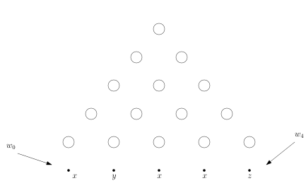
course1/public/img/context-free/CYK/01-02.svg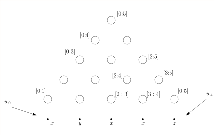
course1/public/img/context-free/CYK/01-03.svg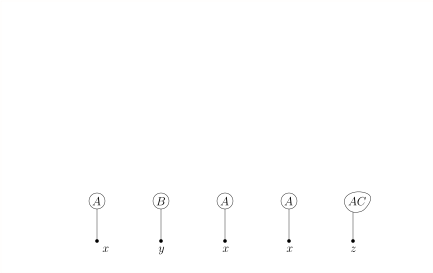
course1/public/img/context-free/CYK/02-02.svg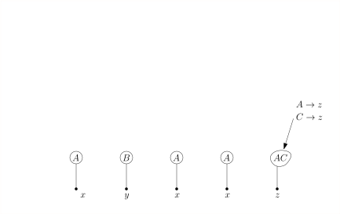
course1/public/img/context-free/CYK/02-03.svg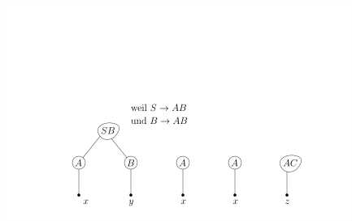
course1/public/img/context-free/CYK/02-04.svg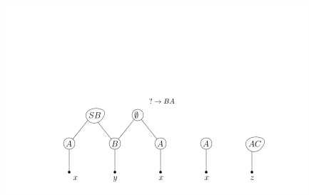
course1/public/img/context-free/CYK/02-05.svg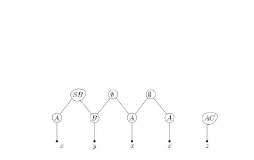
course1/public/img/context-free/CYK/02-06.svg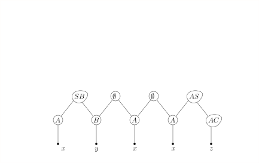
course1/public/img/context-free/CYK/02-07.svg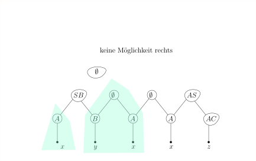
course1/public/img/context-free/CYK/02-08.svg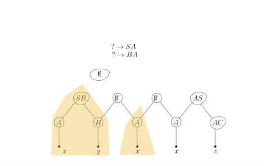
course1/public/img/context-free/CYK/02-09.svg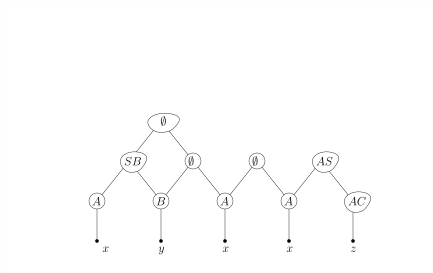
course1/public/img/context-free/CYK/02-10.svg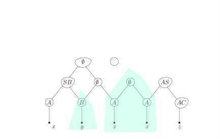
course1/public/img/context-free/CYK/02-11.svg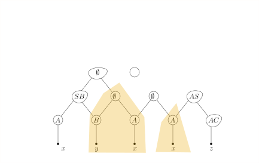
course1/public/img/context-free/CYK/02-12.svg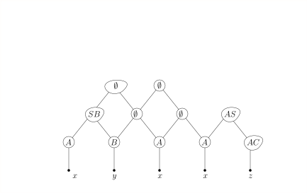
course1/public/img/context-free/CYK/02-13.svg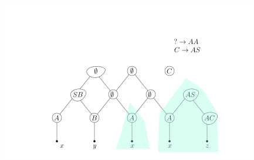
course1/public/img/context-free/CYK/02-14.svg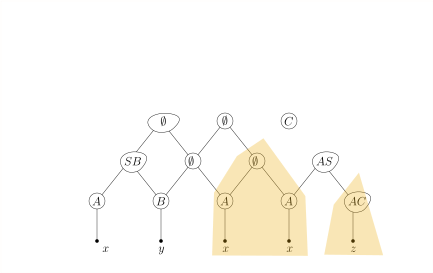
course1/public/img/context-free/CYK/02-15.svg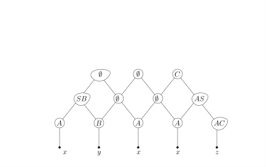
course1/public/img/context-free/CYK/02-16.svg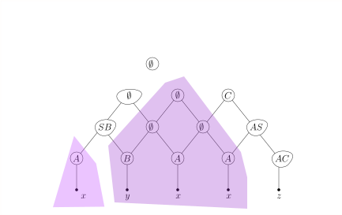
course1/public/img/context-free/CYK/02-17.svg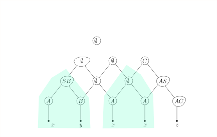
course1/public/img/context-free/CYK/02-18.svg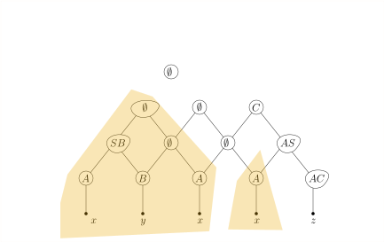
course1/public/img/context-free/CYK/02-19.svg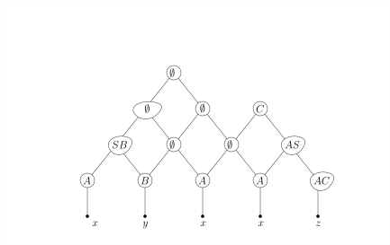
course1/public/img/context-free/CYK/02-20.svg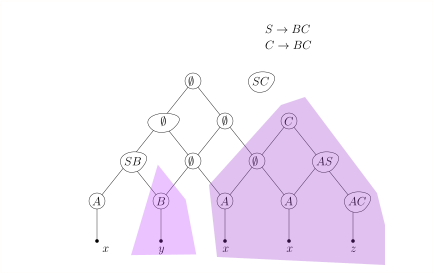
course1/public/img/context-free/CYK/02-21.svg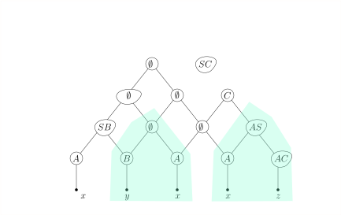
course1/public/img/context-free/CYK/02-22.svg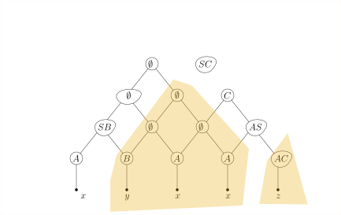
course1/public/img/context-free/CYK/02-23.svg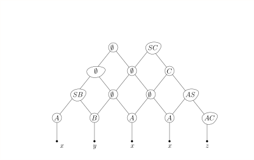
course1/public/img/context-free/CYK/02-24.svg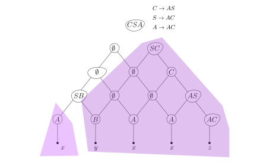
course1/public/img/context-free/CYK/02-25.svg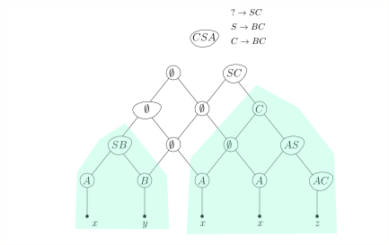
course1/public/img/context-free/CYK/02-26.svg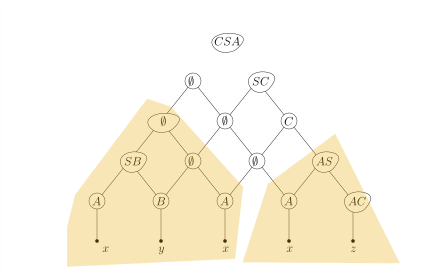
course1/public/img/context-free/CYK/02-27.svg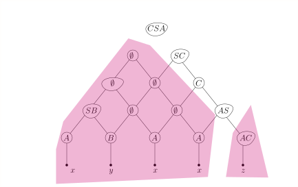
course1/public/img/context-free/CYK/02-28.svg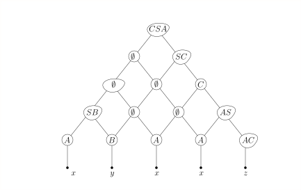
course1/public/img/context-free/CYK/02-29.svg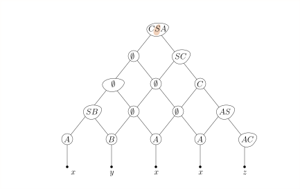
course1/public/img/context-free/CYK/02-30.svg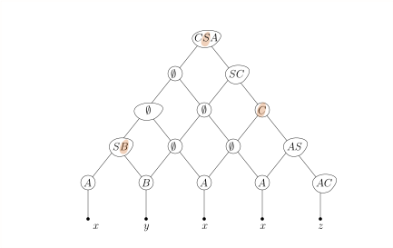
course1/public/img/context-free/CYK/02-31.svg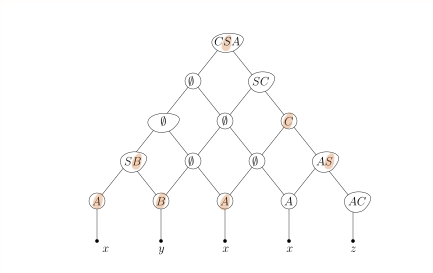
course1/public/img/context-free/CYK/02-33.svg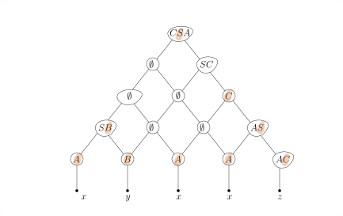
course1/public/img/context-free/CYK/02-34.svg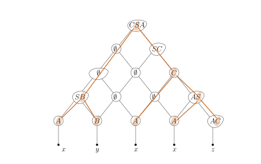
course1/public/img/context-free/CYK/02-35.svgWenn wir uns zusätzlich zu jedem ./course1/wly/06/10-general-parsing.wly:378:9$X \in N_{i,k}$./course1/wly/06/10-general-parsing.wly:378:42 noch./course1/wly/06/10-general-parsing.wly:378:57 merken, durch welche Regeln ./course1/wly/06/10-general-parsing.wly:379:9$X \rightarrow YZ$./course1/wly/06/10-general-parsing.wly:379:37 es./course1/wly/06/10-general-parsing.wly:379:55 aufgenommen wurde und für welches ./course1/wly/06/10-general-parsing.wly:380:9$j$./course1/wly/06/10-general-parsing.wly:380:43 man./course1/wly/06/10-general-parsing.wly:380:46 ./course1/wly/06/10-general-parsing.wly:381:9$Y \in N_{i,j}, Z \in N_{j,k}$./course1/wly/06/10-general-parsing.wly:381:9 hat, dann können wir den./course1/wly/06/10-general-parsing.wly:381:39 Ableitungsbaum leicht rekonstruieren../course1/wly/06/10-general-parsing.wly:382:9